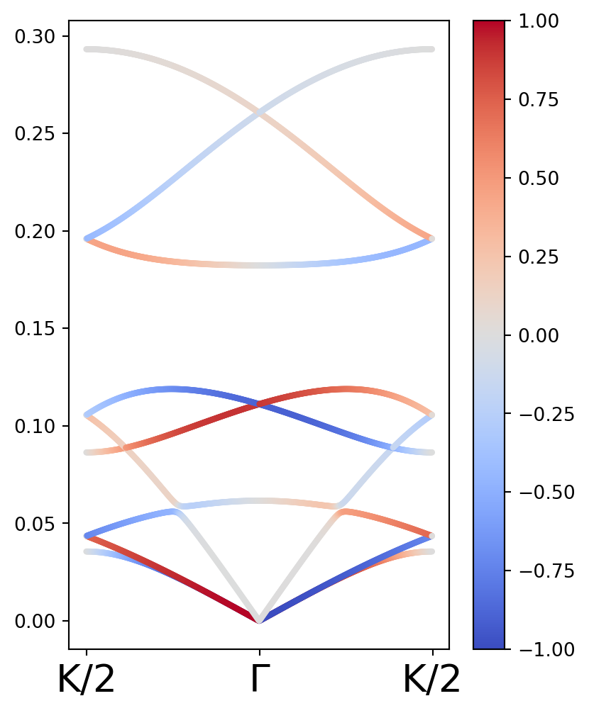

from pylab import *3 Cálculos de relación de dispersión de frecuencia en cadenas quirales
El objetivo de este trabajo es mostrar los cálculos de la relación de dispersión de fonones de distintas cadenas con simetría de tornillo. En este documento se presentan cálculos para cadenas con simetrías \(C_{2}\), \(C_{3}\) y \(C_{4}\) si se ve la cadena desde arriba. Estos cálculos se hacen con el objetivo de replicar los resultados obtenidos en el paper “Chiral Phonon Diode Effect in Chiral Crystals,” Nano Lett. 2022, 22, 4, 1688-1693 y de explorar la posibilidad de encontrar fonones quirales con velocidad de grupo no nula.
3.1 Tensor de constantes de red para una cadena quiral
Los tensores de constante de red para estos sistemas se calculan siguiendo la técnica expuesta por Saito en su libro Physical Properties of Carbon Nanotubes, la cual consiste en transformar el tensor de esfuerzos en su representación diagonal por matrices de rotación cuyos ángulos son obtenidos de las posiciones relativas entre dos átomos del sistema. Para las cadenas modeladas a continuación, se supuso que los enlaces de interacción entre los átomos formaban ángulos de \(\varphi = \pi/3\) respecto a los planos perpendiculares al eje de traslación. Asimismo, vistos desde arriba los tres sitios tenían ángulos de \(\theta = 2 \pi / n\) entre ellos donde \(n\) es el entero que define la simetría \(C_{n}\).
Se asumió que todos los átomos de la cadena (4 como máximo para el caso de \(C_{4}\)) tenían la misma masa. Asimismo, se asumió que en todos los casos el tensor de constante de red en su representación diagonal se escribía como sigue: \[K_{x} = \begin{pmatrix}K_{L} & 0 & 0 \\ 0 & K_{T1} & 0 \\ 0 & 0 & K_{T2}\end{pmatrix},\] donde \(K_{L} = 1\), \(K_{T1} = 0.05\) y \(K_{T2} = 0.25\).
#Constantes
m1 = 1
m2 = 1
m3 = 1
m4 = 1
c = 1#Matriz de resortes a lo largo de x.
KL = 1
KT1 = 0.05
KT2 = 0.25
Kx = array([[KL,0,0],
[0,KT1,0],
[0,0,KT2]],dtype=complex)Se definió una rotación en torno al eje y como \[T(\varphi) = \begin{pmatrix} \cos (\varphi) & 0 & \sin (\varphi) \\ 0 & 1 & 0 \\ - \sin (\varphi) & 0 & \cos(\varphi)\end{pmatrix}.\] De esta forma, la constante de fuerza \[K_{x2} = T(\varphi) K_{x} T(- \varphi)\] tiene un angulo de \(\varphi\) respecto al plano x - y. Por otra parte, se definió la matriz de rotación respecto al eje - z como \[U(\theta) = \begin{pmatrix} \cos (\theta) & - \sin (\theta) & 0 \\ - \sin (\theta) & \cos (\theta) & 0 \\ 0 & 0 & 1\end{pmatrix}.\] De esta forma, si \(\theta\) era el ángulo entre dos sitios, podía definirse la constante de red entre dichos sitios como \[K = U(\theta)K_{x2}U(-\theta).\]
#Rotación de φ respecto al plano x - y.
φxy = pi/3
def T(φ):
return array([[cos(φ) ,0. ,sin(φ)],
[0. ,1. ,0],
[-sin(φ),0. ,cos(φ)]])#Rotación respecto al eje z.
def U(θ):
return array([[cos(θ),-sin(θ),0],
[sin(θ),cos(θ),0],
[ 0, 0,1]] )#Matriz de resortes a lo largo de x.
KL = 1
KT1 = 0.05
KT2 = 0.25
Kx = array([[KL,0,0],
[0,KT1,0],
[0,0,KT2]],dtype=complex)3.2 Definición de la matriz dinámica
En general, los elementos de la matriz dinámica tenían la forma \[D_{ij} = - \frac{K_{ij}}{\sqrt{m_{i}m_{j}}}\] para elementos fuera de la diagonal y \[K_{ii} = \frac{\sum_{i\neq j}Kij}{m_{i}}\] para elementos fuera de la diagonal. En este último término la suma es solo sobre los primeros vecinos del elemento i. Asimismo, en caso de que la interacción fuera con un elemento fuera de la celda unitaria, se añadía la fase correspondiente.
3.3 Definición del operador de polarización
La quiralidad de los fonones se determina a partir de un valor no nulo de la polarización de fonón. Esta se obtiene apartir del valor esperado del operador de polarización. Este operador corresponde a la proyección sobre una base con movimiento circular bien definido. Para un sólo átomo, esta base es \[| R \rangle = \frac{1}{\sqrt{2}}(1,i)^{T}; | L \rangle = \frac{1}{\sqrt{2}}(1,-i)^{T}.\] Explícitamente, el operador de Polarización está dado por \[\hat{S}_{z} = \sum_{\alpha = 1}^{n} \left(|R_{\alpha}\rangle \langle R_{\alpha}| - |L_{\alpha}\rangle \langle L_{\alpha}|\right).\] La suma se hace sobre todos los sitios del sistema. Debajo, se muestran bloques de código donde se define un operador de pseudomomento para una cadena con \(n\) átomos, así como una función que calcula el valor esperado de un operador.
def OperadorPseudomomento(n):
Sz = array([[0,-1J,0],
[1J,0,0],
[0,0,0]],dtype=complex)
return np.kron(np.eye(n,dtype=complex),Sz)
def expectedval(vec,S):
return dot(np.conj(vec).T,dot(S,vec)).real4 Cálculos para la simetría \(C_{2}\)
Debajo se muestra un bloque de código donde se define una función que construye y diagonaliza la matriz dinámica para una cadena con simetría \(C_{2}\), y que además obtiene la polarización de los modos vibracionales.
def EigenfrequenciesC2(k):
"""Función que regresa las eigenfrecuencias para un vector recíproco kz dado."""
#Se define el tensor de esfuerzos de todo el sistema.
#Matriz con constante de fuerza considerando una rotación respecto al plano x - y.
φxy = pi/3
Kx2 = dot(T(φxy),dot(Kx,T(-φxy)))
#Matrices de fuerza para cada uno de los vectores en la red.
K12 = dot(U(0),dot(Kx2,U(0)))
DicMat = { 0: 2* K12/m1,
1: -1*(K12 + K12*exp(-1J*k*c))/sqrt(m1*m2),
2: -1*(K12 + K12*exp(-1J*k*c)).conj().T/sqrt(m1*m2),
3: 2*K12/m2}
Dinteger = array([[0,1],
[2,3]])
Dm = [ [DicMat[i] for i in rw] for rw in Dinteger ]
Dynamical = asarray(np.bmat(Dm))
ω2,eigvecs = eigh(Dynamical)
#Se definen los operadores de Pseudomomento.
S = OperadorPseudomomento(2)
pseudomom = []
for i in range(len(ω2)):
eigvec = eigvecs[:,i]
pseudomom.append(expectedval(eigvec,S))
return sqrt(abs(ω2))/2/pi,pseudomomFinalmente, se muestra la gráfica de bandas para la cadena \(C_{2}\):
Kpoints = np.linspace(-pi/c,pi/c,500)
Klabels = [r"K/2",r"Γ",r"K/2"]
Kticks = concatenate([[0],[250],[500]])
BandasC2 = []
PseudomomC2 = []
KevaluateC2 = (list( map(EigenfrequenciesC2,Kpoints) ))
for ω2,psmom in KevaluateC2:
BandasC2.append(ω2)
PseudomomC2.append(psmom)
BandasC2 = array(BandasC2)
PseudomomC2 = array(PseudomomC2)
numKC2,nbandsC2 = shape(BandasC2)
kenumC2 = arange(numKC2)
fig,ax = plt.subplots(ncols=1,nrows=1,figsize=(4.5,6))
for j in range(nbandsC2):
graficaC2 = ax.scatter(kenumC2,BandasC2.T[j],c = PseudomomC2.T[j],cmap = "coolwarm",vmax = 1, vmin = -1,s = 5)
fig.colorbar(graficaC2)
ax.set_xticks(Kticks)
ax.set_xticklabels(Klabels,fontsize = 20);
5 Cálculos para la simetría \(C_{3}\)
Debajo se muestra un bloque de código donde se define una función que construye y diagonaliza la matriz dinámica para una cadena con simetría \(C_{2}\), y que además obtiene la polarización de los modos vibracionales.
def EigenfrequenciesC3(k):
"""Función que regresa las eigenfrecuencias para un vector recíproco kz dado."""
#Se define el tensor de esfuerzos de todo el sistema.
#Matriz con constante de fuerza considerando una rotación respecto al plano x - y.
φxy = pi/3
Kx2 = dot(T(φxy),dot(Kx,T(-φxy)))
#Matrices de fuerza para cada uno de los vectores en la red.
K23 = dot(U(pi),dot(Kx2,U(-pi))) #Calculada tomando 2 como origen.
K12 = dot(U(pi/3),dot(Kx2,U(-pi/3))) #Calculada tomando 1 como origen.
K13 = dot(U(-pi/3),dot(Kx2,U(pi/3))) #Calculado tomando 3 como origen.
DicMat = { 0: (K12 + K13)/m1,
1: -K12/sqrt(m1*m2),
2: -K13/sqrt(m1*m3)*exp(-1J*k*c),
3: -K12/sqrt(m1*m2),
4: (K23+K12)/m2,
5: -K23/sqrt(m2*m3),
6: -K13/sqrt(m1*m3)*exp(1J*k*c),
7: -K23/sqrt(m2*m3),
8: (K23 + K13)/m3 }
Dinteger = array([[0,1,2],
[3,4,5],
[6,7,8]])
Dm = [ [DicMat[i] for i in rw] for rw in Dinteger ]
Dynamical = asarray(np.bmat(Dm))
ω2,eigvecs = eigh(Dynamical)
#Se definen los operadores de Pseudomomento.
S = OperadorPseudomomento(3)
pseudomom = []
for i in range(len(ω2)):
eigvec = eigvecs[:,i]
pseudomom.append(expectedval(eigvec,S))
return sqrt(abs(ω2))/2/pi,pseudomomFinalmente, se muestra la gráfica de bandas para la cadena $C_{3}:
Kpoints = np.linspace(-pi/c,pi/c,500)
Klabels = [r"K/2",r"Γ",r"K/2"]
Kticks = concatenate([[0],[250],[500]])
BandasC3 = []
PseudomomC3 = []
KevaluateC3 = (list( map(EigenfrequenciesC3,Kpoints) ))
for ω2,psmom in KevaluateC3:
BandasC3.append(ω2)
PseudomomC3.append(psmom)
BandasC3 = array(BandasC3)
PseudomomC3 = array(PseudomomC3)
numKC3,nbandsC3 = shape(BandasC3)
kenumC3 = arange(numKC3)
fig,ax = plt.subplots(ncols=1,nrows=1,figsize=(4.5,6))
for j in range(nbandsC3):
graficaC3 = ax.scatter(kenumC3,BandasC3.T[j],c = PseudomomC3.T[j],cmap = "coolwarm",vmax = 1, vmin = -1,s = 5)
fig.colorbar(graficaC3)
ax.set_xticks(Kticks)
ax.set_xticklabels(Klabels,fontsize = 20);
6 Cálculos para la simetría \(C_{4}\)
Debajo se muestra un bloque de código donde se define una función que construye y diagonaliza la matriz dinámica para una cadena con simetría \(C_{2}\), y que además obtiene la polarización de los modos vibracionales.
def rad(x):
return x*pi/180def EigenfrequenciesC4(k):
"""Función que regresa las eigenfrecuencias para un vector recíproco kz dado."""
#Se define el tensor de esfuerzos de todo el sistema.
#Matriz con constante de fuerza considerando una rotación respecto al plano x - y.
φxy = pi/3
Kx2 = dot(T(φxy),dot(Kx,T(-φxy)))
#Matrices de fuerza para cada uno de los vectores en la red.
K12 = dot(U(0),dot(Kx2,U(0)))
K13 = np.zeros((3, 3))
K14 = dot(U(-pi/2),dot(Kx2,U(pi/2)))
K23 = dot(U(pi/2),dot(Kx2,U(-pi/2)))
K24 = np.zeros((3, 3))
K34 = dot(U(pi),dot(Kx,U(-pi)))
DicMat = { 0: (K12 + K13 + K14)/m1,
1: -K12/sqrt(m1*m2),
2: -K13/sqrt(m1*m3),
3: -K14/sqrt(m1*m4)*exp(-1J*k*c),
4: -K12.conj().T/sqrt(m1*m2),
5: (K12 + K23 + K24)/m2,
6: -K23/sqrt(m2*m3),
7: -K24/sqrt(m2*m4),
8: -K13.conj().T/sqrt(m3*m1),
9: -K23.conj().T/sqrt(m3*m2),
10: (K13 + K23 + K34)/m3,
11: -K34/sqrt(m3*m4),
12: -K14.conj().T/sqrt(m4*m1)*exp(1J*k*c),
13: -K24.conj().T/sqrt(m4*m2),
14: -K34.conj().T/sqrt(m4*m3),
15: (K14 + K24 + K34)/m4}
Dinteger = array([[0,1,2,3],
[4,5,6,7],
[8,9,10,11],
[12,13,14,15]])
Dm = [ [DicMat[i] for i in rw] for rw in Dinteger ]
Dynamical = asarray(np.bmat(Dm))
ω2,eigvecs = eigh(Dynamical)
#Se definen los operadores de Pseudomomento.
S = OperadorPseudomomento(4)
pseudomom = []
for i in range(len(ω2)):
eigvec = eigvecs[:,i]
pseudomom.append(expectedval(eigvec,S))
return sqrt(abs(ω2))/2/pi,pseudomomFinalmente, se muestra la gráfica de bandas para la cadena $C_{4}:
Kpoints = np.linspace(-pi/c,pi/c,500)
Klabels = [r"K/2",r"Γ",r"K/2"]
Kticks = concatenate([[0],[250],[500]])
BandasC4 = []
PseudomomC4 = []
KevaluateC4 = (list( map(EigenfrequenciesC4,Kpoints) ))
for ω2,psmom in KevaluateC4:
BandasC4.append(ω2)
PseudomomC4.append(psmom)
BandasC4 = array(BandasC4)
PseudomomC4 = array(PseudomomC4)
numKC4,nbandsC4 = shape(BandasC4)
kenumC4 = arange(numKC4)
fig,ax = plt.subplots(ncols=1,nrows=1,figsize=(4.5,6))
for j in range(nbandsC4):
graficaC4 = ax.scatter(kenumC4,BandasC4.T[j],c = PseudomomC4.T[j],cmap = "coolwarm",vmax = 1, vmin = -1,s = 5)
fig.colorbar(graficaC4)
ax.set_xticks(Kticks)
ax.set_xticklabels(Klabels,fontsize = 20);